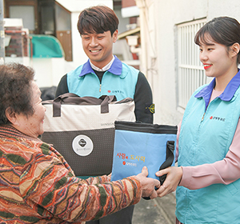
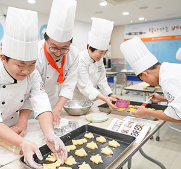
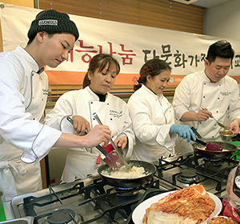
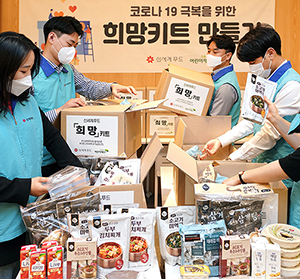
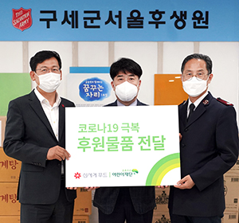
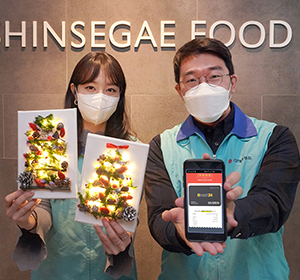
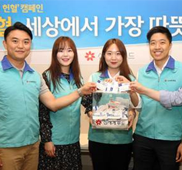
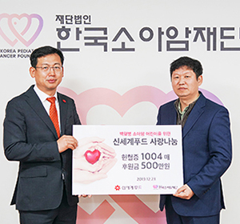
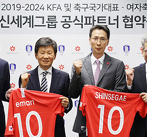

희망배달캠페인 임직원 참여율 및 조성기금
| 구분 | 2015 | 2016 | 2017 | 2018 | 2019 | 2020 | 2021 | 2022 | 2023 |
|---|---|---|---|---|---|---|---|---|---|
| 참여인원 | 33,654 | 34,653 | 35,562 | 39,190 | 37,923 | 38,477 | 39,410 | 40,264 | 40,215 |
| 조성기금 | 63억 | 67억 | 72억 | 73억 | 77억 | 72억 | 72억 | 77억 | 79억 |
즐거운 동행, 행복한 나눔 캠페인
신세계푸드는 “즐거운 동행, 행복한 나눔” 캠페인을 통해 업의 특성에 맞는 지속적인 사회공헌을 수행하며 나눔을 실천하고 있습니다.
즐겁고 행복한 세상을 만들고자 취약계층과 소외된 이웃을 대상으로 다양한 사회공헌 활동을 전개하고 있습니다.
즐거운 동행 (임직원들의 자발적인 참여형 봉사활동)
행복한 나눔 (당사 제품등을 지역사회에 기부하는 활동)
기타 활동

사랑의 도시락

찾아가는 베이킹클래스

다문화가정 요리교실
행복한 나눔 (당사 제품등을 지역사회에 기부하는 활동)

코로나19 희망키트 기부

창립25주년기념 후원물품 전달

모바일상품권 기부
기타 활동

사랑의 헌혈

헌혈증 기부

공식파트너 협약